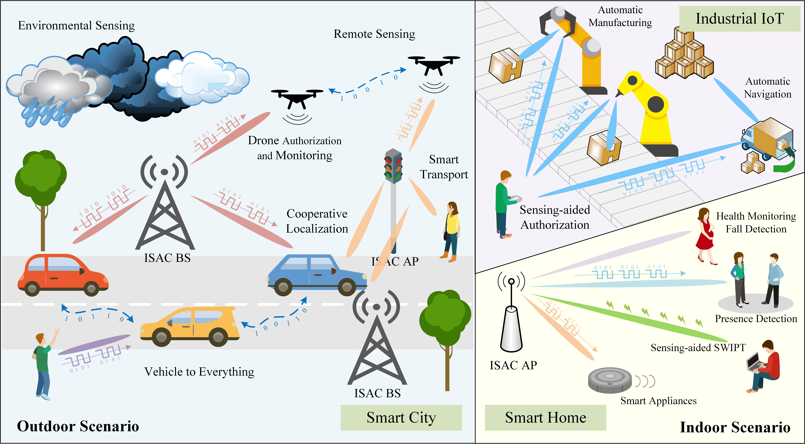
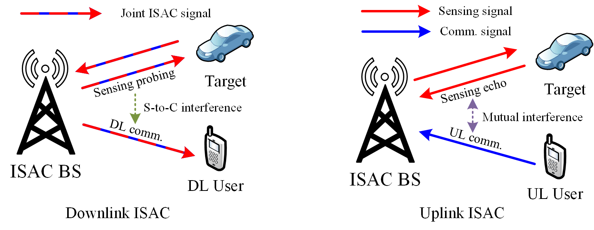
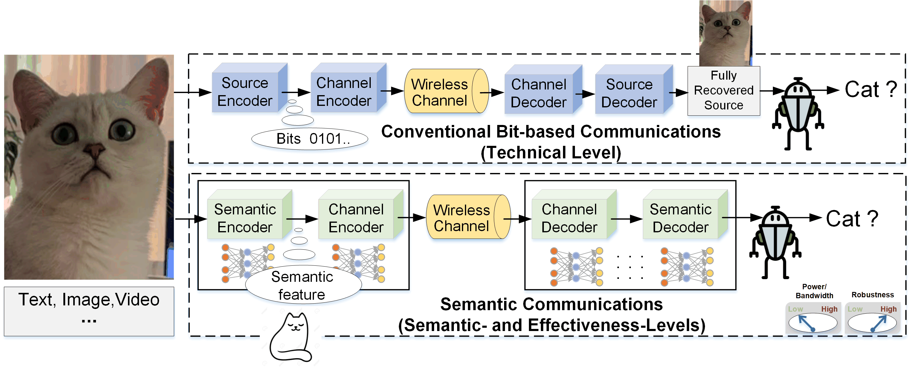
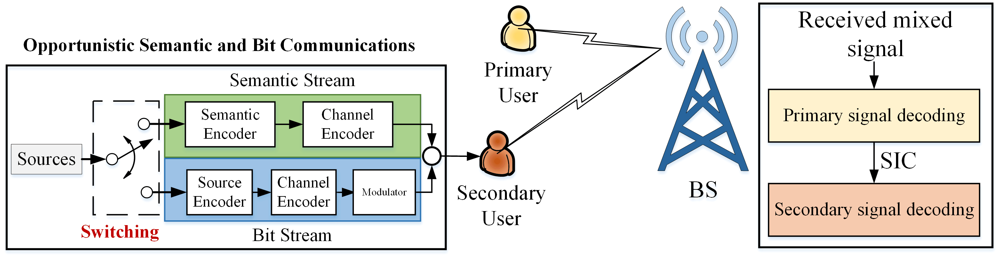

Next Generation Multiple Access (NGMA)
Multiple access (MA) is one of the fundamental technologies in wireless networks. Future wireless networks not only have to satisfy stringent communication requirements but also have to support diverse functionalities and connect heterogeneous types of devices. In line with this, existing communication-oriented MA schemes are expected to be replaced by next generation multiple access (NGMA). In the recently published International Mobile Telecommunications (IMT)-2030 Framework, it has been highlighted that ``for multiple access, technologies including NOMA and grant free multiple access are expected to be considered to meet future requirements''. Our research exploits the “non-orthogonality” principle and push the evolution from non-orthogonal multiple access (NOMA) to NGMA with the following conducted research topics.
1. NOMA-empowered Integrated Sensing and Communications (ISAC)

Fig. 1: Promising Applications of ISAC.

Fig. 2: Inter-functionality Interference Management in Downlink and Uplink ISAC.
Despite being promising for 6G (Fig. 1), the strike of a good performance trade-off between the two functionalities is a challenging task when designing ISAC. The intrinsic reason is that ISAC may suffer from severe inter-functionality interference due to the hardware platform and radio resource sharing. This calls for the development of efficient
interference mitigation and resource management approaches. The prominent features of NOMA in efficient interference management and flexible resource allocation match well with the requirements encountered in ISAC. Our main research contributions are listed below.
2. Interplay between NOMA and Semantic Communications

Fig. 1: Illustration of Semantic Communications for Image Recognition.
Current wireless communication designs still focus on the technical-level problem using the Shannon classical information theory, i.e., How accurately can the symbols of communication be transmitted? There is a paucity of investigations on the other two semantic-level and effectiveness-level, i.e., How precisely do the transmitted symbols convey the desired meaning? and How effectively does the received meaning affect conduct in the desired way? which are more related to the ultimate goal of communications problems.
In response to the semantic- and effectiveness-level communication problems, semantic communications have recently
attracted significant research attentions from both industry and academia. In semantic communications, only the key information that contains the specific meaning/actions/goals relevant to the destinations needs to be transmitted, as shwon in Fig. 1.

Fig. 2: Semi-NOMA for Heterogeneous Semantic and Bit Downlink Communications.

Fig. 3: Opportunistic Semantic and Bit Communications in Uplink NOMA.
Against this background, our research focuses on the interplay between NOMA and semantic communications:
- NOMA for Semantic Communications: With the rapid breakthrough of the emerging semantic communications and the steady development of the currently employed bit-based communications, future networks are expected to simultaneously support both the semantic and bit transmissions to provide ubiquitous, customized, and intelligent connectivity among different types of devices (e.g., human, machine, and their interactions), i.e., heterogeneous semantic and bit transmission for multi-user communications. To efficiently support it, we proposed a novel semi-NOMA, as shown in Fig. 2. More details can be found in [JSAC paper]. A more general resource allocation for the heterogeneous semantic and bit transmission with NOMA can be found in [TWC paper]
- Semantic Communications for NOMA: Existing works show that semantic communications are more robust and sustainable than conventional bit communications. Applying semantic communications in NOMA can enhance the performance of users having a poor channel conditions and/or reduce the required transmit power at users, i.e., reducing the multi-user interference for NOMA. Motivated by this observation, we proposed an opportunistic semantic and bit communication strategy for enabling the secondary user to be efficiently admitted in NOMA, as shown in Fig. 3. More details can be found in [JSAC paper].